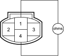
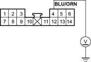

- Disconnect the A/C pressure switch 4P connector.
- Turn the ignition switch ON (II).
- Measure the voltage between the No. 1 terminal of the A/C pressure switch 4P connector and body ground.
A/C PRESSURE SWITCH 4P CONNECTOR

Wire side of female terminals
Is there battery voltage?
YES - Go to step 4.
NO - Repair open in the wire between the A/C diode A, the ECM and the A/C pressure switch. 
- Turn the ignition switch OFF.
- Check for continuity between the No. 1 and No. 4 terminals of the A/C pressure switch.
A/C PRESSURE SWITCH

Is there continuity?
YES - Go to step 6.
NO - Go to step 10.
- Reconnect the A/C pressure switch 4P connector.
- Disconnect the climate control unit connector A (14P).
- Turn the ignition switch ON (II).
- Measure the voltage between the No. 4 terminal of climate control unit connector A (14P) and body ground.
CLIMATE CONTROL UNIT CONNECTOR A (14P)

Wire side of female terminals
Is there battery voltage?
YES - Check for loose wires or poor connections at climate control unit connector A (14P) and at the A/C pressure switch 4P connector. If the connections are good, substitute a known-good climate control unit and recheck. If the symptom/indication goes away, replace the original climate control unit.
NO - Repair open in the wire between the climate control unit and the A/C pressure switch.
- Check for proper A/C system pressure.
Is the pressure within specifications?
YES - Replace the A/C pressure switch.
NO - Repair the A/C pressure problem.